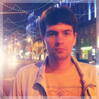

|
Меня зовут Игорь, и я занимаюсь дизайном с 2005 года. Моя задача – создавать современный дизайн, учитывая последние тренды и применяя все современные инструменты.
Из личных качеств я могу выделить самые важные: умение работать в команде, внимательность к деталям, |
 |
| Мои работы |